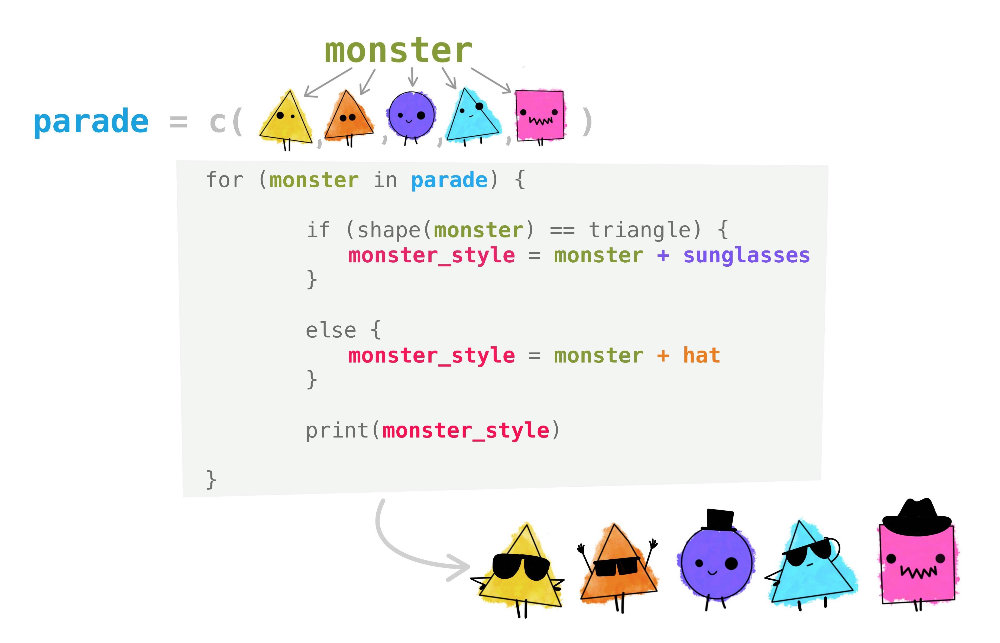

[1] 1
[1] 4
[1] 9
[1] 16
[1] 25Intro to Data Science
Lecture 7 – Code Iteration
A Guide to Your Process
Scheduling
Learning Objectives
Practice
Supporting Information
Class Discussion
Today’s Plan
- Code Iteration with Loops
- Conditionals in Loops
- In-Class Free Work
Today’s Learning Objectives
After today’s session you will be able to:
- Describe the contexts where iteration is useful
- Apply loops to small arithmetic problems
- Create a loop with a conditional
Repeated Operations
- Often we want to repeat a given operation multiple times
- I.e., repeat iteratively
- Could just copy/paste our code for each iteration
- Labor intensive & inefficient & ugly (IMO)
- Copy/pasting fails if you need to do something many times
- Code iteration is our solution to these types of problems!
Code Iteration
- Iteration process:
- Define the operation that you want to repeat
- Define the values to be passed through that operation
- Press “go” and sit back while the code does the work!
- Benefits:
- Much faster than copy/pasting code
- Code is more human-readable / navigable
- Allows you to do something else while the code iterates itself!
- This method is called a “for loop”
Loop Syntax
- For loops repeat an operation for each value given to them
- Fundamental syntax is as follows:
- More info:
- index = placeholder for one value in vector
- vector = set of values to pass through loop
- curly braces (
{/}) to define start/end
Loop Example
- Let’s check out an example loop to get more comfortable with these!
- Square each integer between 1 and 5
Loop Practice
- Make a vector of numbers between 5 and 25
- Write a for loop that:
- Takes the square root of each number (see
?sqrt)
- Takes the square root of each number (see
- Prints that result (use
printfunction)
- Prints that result (use
Loop Practice (Answer)
- Demonstrating on only a few numbers
More Loop Practice
- Write a second loop that:
- multiplies each number by 32
- Prints the result in the console
Temperature Check
How are you Feeling?

Messaging with R
- By default, loops don’t put stuff in the Console
- This can make figuring out what is going on difficult
- Fortunately, R contains functions for putting text into the Console
printis the one we’ll focus on!
- However,
printonly accepts one vector at a time
pastemakes multiple vectors into one vector
print + paste
- We can combine
printandpasteto assemble informative messages!
- For example:
[1] "Hello my name is Nick"
- This can be used in a loop to create messages that change with each iteration!
Message Example
- Let’s consider an example of a loop that uses
printandpasteto make messages
- For instance:
[1] "The square of 1 is 1"
[1] "The square of 2 is 4"
[1] "The square of 3 is 9"
[1] "The square of 4 is 16"
[1] "The square of 5 is 25"Write Messages
- We’ll modify your earlier practice loops to make informative messages!
- For the loop that takes the square root of the index:
- Make the
printstep tell you the starting number and its square root
- Make the
More Message Practice
- For the loop that multiplies the index by 32:
- Write a message that says each number and what it times 32 is equal to
Temperature Check
How are you Feeling?
Conditionals
- You can write code to do something only if some condition is met
- Do this by using conditionals!
- Syntax is similar to logical statements for subsetting
- Recall our earlier conversations about conditional operators:
==,&,>, etc.
- Two main conditional functions:
if&else
Conditional Example
Conditional Syntax
ifwants:- Condition to check in parentheses
(...) - What to do if the condition is met in curly braces
{...}
- Condition to check in parentheses
elsewants:- Only curly braces
{...}bits - Can only be used if
ifis used first
- Only curly braces
- The example in the previous slide is just for one
if- Essentially ‘either this or that’
Multiple ifs
- You can add multiple conditions if desired!
- See how the second condition uses
else if(...){...}?
Conditionals in Loops
- You can use conditionals to make one loop handle multiple possibilities
- For example:
[1] 10
[1] 9
[1] 8
[1] 2
[1] 2.236068
[1] 2.44949Loop Conditional Visual

Loops with Conditionals
- Write a loop that:
- Uses
gas the index - Uses a vector that has all the integers between 10 and 20
- Prints each value in the vector
- Uses
- Add two conditionals to that loop:
- If
gis less than 14,print“Less than 14” - Otherwise,
printthe value as-is
- If
Temperature Check
How are you Feeling?
In-Class Free Work
- Draft 2 of Function Tutorials is due next week!
- Presentations during Lecture #8
- Requires ‘revision response’ where you discuss what changes you made due to feedback
- GitHub Presence is due next week
- You have most of what you need for full points on that already
- Any questions about upcoming assignments / past topics?
- I strongly recommend taking advantage of this time!
Upcoming Due Dates
Due before lecture
(By midnight)
- Homework #7
- Submit Draft 2 of Function Tutorials
- Double check rubric to see that you’re not leaving any points on the table!
- Remember to also submit the Revision Response
Due before lab
(By midnight)
- Homework #8
- Muddiest Point #8
- GitHub Presence
Back to Course Page: Programming in R for Biologists